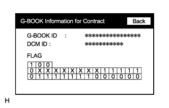
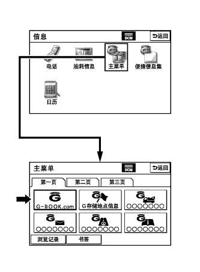

G-BOOK SYSTEM > REGISTRATION |
| 1. VEHICLE CONTRACT SETTING |
Check the ID before replacement (when diagnosis can be activated).
Enter diagnostic mode (Click here).
 |
Select "Service Information" on the Service Menu screen.
 |
Select "G-BOOK Information for Contract" on the Service Information screen.
|  |
Check the G-BOOK ID or DCM ID.
Replace the display and navigation module display or the telematics transceiver.
Replace the display and navigation module display or the telematics transceiver at a dealership.
Check the ID after replacement.
Enter diagnostic mode (Click here).
|
Select "Service Information" on the Service Menu screen.
|
Select "G-BOOK Information for Contract" on the Service Information screen.
Check the G-BOOK ID or DCM ID.
Fill-in the Vehicle Contract Setting Request Form.
After filling in the Vehicle Contract Setting Request Form, send it back to the G-BOOK center.
| Item | Information to Enter | Note |
| *1 | Enter the dealership name of the applicant. | Applicant information |
| *2 | Enter the name of the applicant. | Applicant information |
| *3 | Enter the fax number of the dealership. | Applicant information |
| *4 | Enter the phone number of the dealership. | Applicant information |
| *5 | Enter the VIN of the vehicle. | Vehicle information |
| *6 |
| Change request information from the dealership |
| *7 |
| Change request information from the dealership |
| *8 |
| Change request information from the dealership |
| *9 |
| Change request information from the dealership |
| *10 |
| Change request information from the dealership |
| *11 | Enter the mileage on the odometer when the display and navigation module display is replaced. | Change request information from the dealership |
| *12 | Enter the date that the mileage was recorded. | Change request information from the dealership |
|  |
Perform the procedure to resume the G-BOOK service.
Press the "INFO/TEL" switch on the display and navigation module display.
Perform the operations shown in the illustration and select G-BOOK.com.
Check that G-BOOK.com is displayed.
After the guidance screen is displayed, perform the procedure to resume the G-BOOK service by following the instructions on the screen.
Perform the procedure to start the emergency call service.
After completing the procedure to resume the G-BOOK service, perform the procedure to start the emergency call service by following the instructions on the screen.